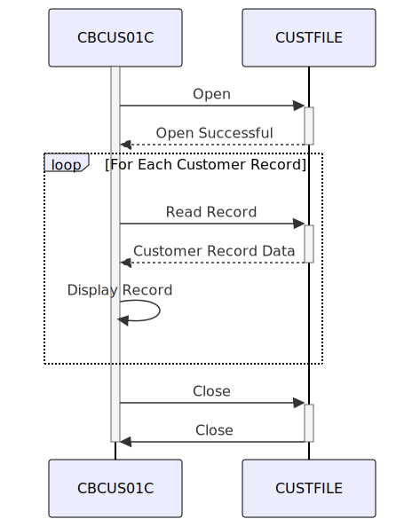

Gerado em: 1º de outubro de 2024
Título do Documento: CardDemo Customer Data Extract - Especificação do Programa
Descrição Resumida:
Este programa lê dados de clientes de um arquivo VSAM KSDS chamado CUSTFILE e os exibe na tela. É um processo em lote que processa sequencialmente cada registro de cliente no arquivo. O programa inclui tratamento de erros para operações de arquivo e exibe mensagens apropriadas em caso de erros.
Histórias do Usuário:
Como um analista de dados, preciso ser capaz de extrair e visualizar dados do cliente do CUSTFILE para que eu possa realizar análises e gerar relatórios.
Epic Relacionado: 8 - Gestão de Dados do Cliente
Requisitos Técnicos:
- Operações de Arquivo: O programa precisa realizar as seguintes operações de arquivo no
CUSTFILE:
- Abrir: Abra o arquivo no modo de entrada para acesso sequencial.
- Ler: Leia cada registro de cliente sequencialmente do arquivo.
- Fechar: Feche o arquivo após processar todos os registros.
- Validação de Dados:
- Nenhuma regra específica de validação de dados é implementada no código fornecido. No entanto, é crucial adicionar verificações de validação para integridade de dados, como:
- ID do Cliente: Verifique se o
FD-CUST-ID é numérico e está dentro de um intervalo válido.
- Dados do Cliente: Valide o conteúdo de
FD-CUST-DATA com base em regras de negócios e tipos de dados.
- Tratamento de Erros:
- O programa deve lidar com erros potenciais durante as operações de arquivo de forma adequada.
- Deve exibir mensagens de erro amigáveis indicando o problema encontrado.
- Para erros críticos, o programa deve terminar anormalmente e registrar os detalhes do erro.
- Exibição de Dados:
- O programa deve exibir o conteúdo de cada registro de cliente recuperado do
CUSTFILE.
- O formato de exibição deve ser claro e legível.
Modelos Relacionados:
- Cliente: Representa um registro de cliente no
CUSTFILE
FD-CUST-ID (String): Identificador único para cada cliente.FD-CUST-DATA (String): Contém todas as outras informações relacionadas ao cliente.
Configurações:
CUSTFILE: Caminho para o arquivo VSAM KSDS contendo os dados do cliente.
Melhorias de Código:
- Validação de Dados: Implemente regras robustas de validação de dados para os campos
CUSTOMER-RECORD para garantir a integridade dos dados.
- Registro de Erros: Aprimore o tratamento de erros gravando mensagens de erro detalhadas, incluindo timestamps, em um arquivo de log para facilitar a depuração e o monitoramento.
- Modularização: Divida o programa em módulos ou sub-rotinas menores e reutilizáveis para melhorar a organização e a manutenção do código.
- Interface do Usuário: Considere aprimorar a interface do usuário, permitindo que os usuários especifiquem critérios de pesquisa ou filtros para a extração de dados do cliente.
- Opções de Saída: Forneça opções para gerar os dados extraídos em diferentes formatos, como um arquivo de texto ou uma tabela de banco de dados.
Melhorias de Segurança:
- Controle de Acesso: Implemente mecanismos de controle de acesso para restringir o acesso não autorizado ao
CUSTFILE e ao próprio programa.
- Mascaramento de Dados: Se o
CUSTFILE contiver informações confidenciais do cliente, considere mascarar ou criptografar os dados antes de exibi-los.
- Trilha de Auditoria: Registre todas as tentativas de acesso a arquivos, incluindo timestamps e IDs de usuário, para fins de auditoria e segurança.
Diagrama Conceitual:

–Made by “Smart Engineering” (by Compass.UOL)–